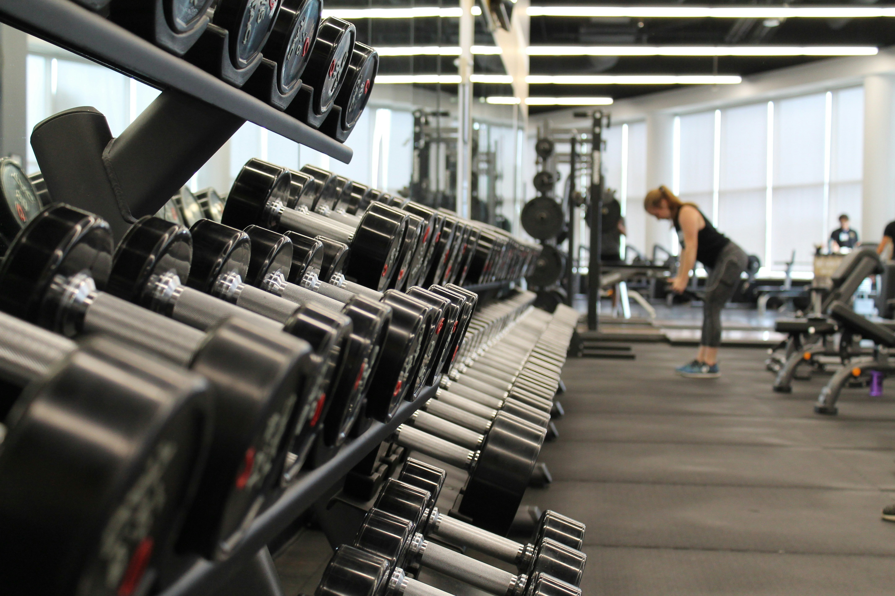
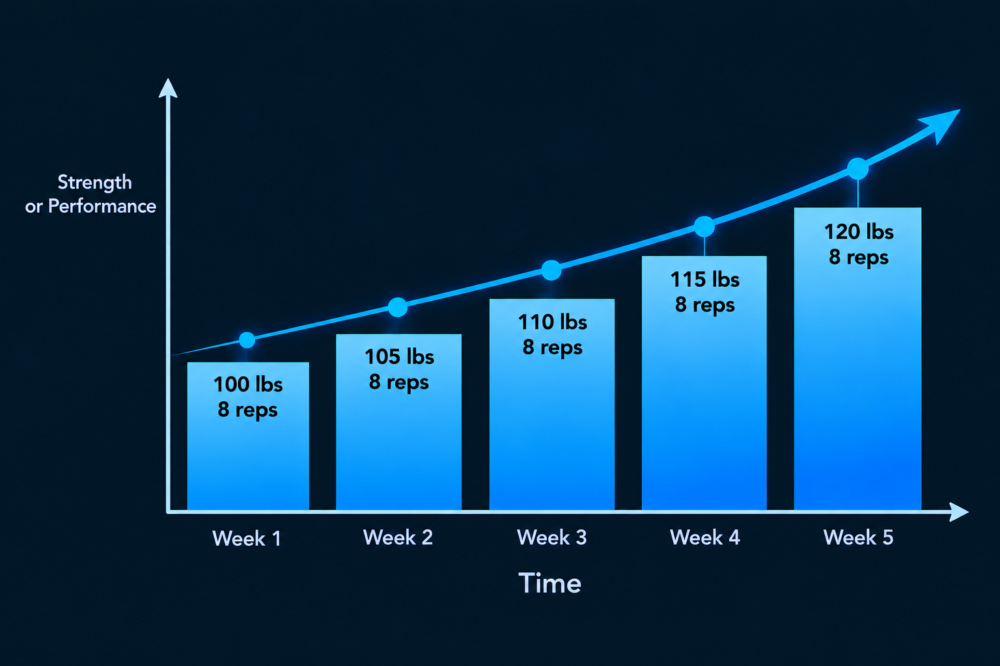
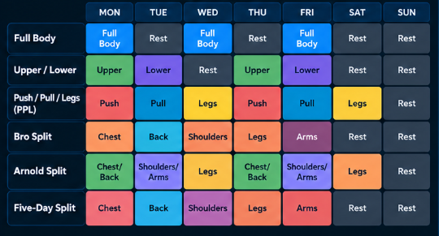
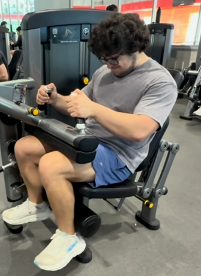
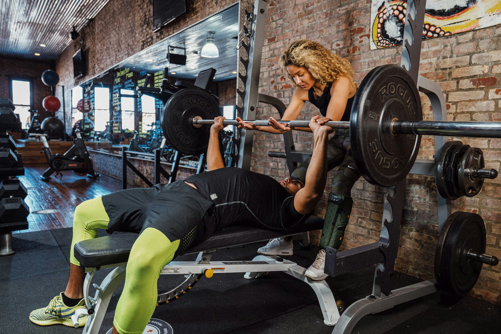

Repetition (Rep)
One complete execution of an exercise. For example, squatting and standing up one time is one rep.
Learn the fundamentals of strength training and how to build an effective training program.
These cards represent the planned interactive sections. JavaScript will be implemented in the final version to allow users to navigate through each card by clicking previous and next buttons (Kind of like a carousel). Each column reprosents one card carausel.

Image by Danielle Cerullo on UnsplashOne complete execution of an exercise. For example, squatting and standing up one time is one rep.
A set is a group of consecutive reps. Doing 8 reps of bench press without resting is one set.
The most weight you can successfully lift for one clean repetition of an exercise.
Volume is the amount of work performed during training. It can be increased by performing more sets, more reps, or using more weight.
Intensity is a measure of how demanding an exercise or set is. For example, performing a set with 90% of your one-rep max is considered fairly high intensity.
The distance a joint or body part moves during an exercise. For example, the range of motion for a bicep curl goes from a fully extended arm to a fully curled arm.
A compound movement is an exercise that works multiple muscles or joints. Bench press, squats, and deadlifts are all compound movements.
An isolation movement primarily targets one specific muscle group. For example, the pec deck primarily targets the chest muscles, making it an isolation movement.
The eccentric is the part of a rep when the muscle lengthens while under tension. This is typically the lowering part of the rep, such as lowering the weight during a dumbbell shoulder press.
The concentric is the part of a rep when the muscle shortens while producing force. This is typically the lifting or pushing part of an exercise, such as standing up from a squat or curling a weight upward.
How many additional reps you believe you could have done before reaching failure.
The point at which you can no longer complete another rep with proper form.
A set where the intensity or volume is high enough to contribute to your training. Typically done after a warm-up set.

Progressive overload is the gradual increase of stress placed on your muscles during training. Your body adapts to the demands you place on it, so gradually making an exercise more challenging is important for continued strength and muscle growth.
One of the most common ways to progressively overload is to increase the amount of weight you lift. For example, if you can comfortably bench press 185 pounds for your target number of reps, eventually increasing the weight to 190 pounds for the same amount of reps would be progressive overload.
You can also progressively overload by performing more repetitions with the same weight. For example, if you can perform 8 reps with 100 pounds, eventually being able to perform 10 reps with the same weight represents an increase in your training performance.
Adding another set to an exercise can increase the total amount of work performed during a workout. For example, progressing from 3 sets of an exercise to 4 sets increases the amount of training volume your muscles receive.
Increasing your range of motion can make an exercise more demanding without necessarily increasing the weight. Performing an exercise through a larger, controlled range of motion can require your muscles to work harder throughout the movement.
Improving your technique can also represent progress. Using better form can make sure the intended muscles are doing the work and can eliminate unnecessary momentum or assistance from other parts of the body.
Training a muscle group more frequently can increase the amount of work it receives over time. However, more frequent training also requires adequate recovery, so increasing frequency should be done gradually.
Progressive overload does not mean that you have to add weight to every exercise every workout. Increasing repetitions, sets, range of motion, or improving technique can all make training more challenging and help you continue progressing.
Keeping track of your workouts makes progressive overload much easier. Recording the exercises, weights, sets, and repetitions you perform allows you to compare your current performance with previous workouts and identify when you are ready to progress.
 Image by Anna Pelzer on Unsplash
Image by Anna Pelzer on Unsplash
Nutrition provides your body with the energy and nutrients it needs to train, recover, and build muscle. Consistently eating enough nutritious food can help support your performance and make it easier to reach your training goals.
Protein provides the amino acids your body uses to repair and build muscle tissue. Good sources include meat, poultry, fish, eggs, dairy products, beans, and other protein-rich foods. Getting enough protein throughout the day can help support recovery and muscle growth. (Typically, aim for around .8 grams of protein per pound of body weight.)
Calories provide the energy your body uses to perform daily activities and exercise. The number of calories you need depends on factors such as your body size, activity level, and goals. Eating more or fewer calories than you use can affect changes in body weight over time.
Staying hydrated is important for normal physical performance and recovery. Water helps regulate body temperature and supports many processes involved in exercise. Drinking fluids regularly throughout the day is an easy way to support your training.
Sleep is arguably the most important part of recovery because it's when your body actually rests and repairs itself. Getting enough quality sleep is borderline required to help support physical performance, energy levels, and your ability to recover between workouts.
Rest days give your muscles and other tissues time to recover from the stress of training. Taking time away from intense exercise can help you return to your next workout feeling recovered and ready to perform.
Training creates stress that your body needs time to recover from. Recovery allows your muscles to repair and adapt to that training stimulus. Proper nutrition, sleep, hydration, and appropriate rest between workouts all contribute to the recovery process.
Muscles do not necessarily need to be trained as hard as possible every day. Allowing enough time between demanding workouts can help you recover and perform better when you train the same muscle group again.
Progress comes from consistently training, eating appropriately, and recovering over a long period of time. A single workout or meal will not determine your results. Building sustainable habits and following them consistently is much more important.

A full-body split trains most major muscle groups during each workout. This can be a good option for beginners or people who can only train a few days each week.
An upper/lower split separates workouts into upper-body and lower-body days. For example, someone might train their upper body on Monday and lower body on Tuesday before repeating the cycle later in the week.
A push/pull/legs split organizes workouts based on movement patterns. Push days generally train the chest, shoulders, and triceps, pull days train the back and biceps, and leg days train the lower body.
A bro split typically dedicates each workout to one or two specific muscle groups. For example, someone might train chest on Monday, back on Tuesday, shoulders on Wednesday, and legs on Thursday.
The Arnold split is commonly organized around chest and back, shoulders and arms, and legs. These workouts are typically repeated throughout the week, allowing each major muscle group to be trained multiple times.
A five-day split divides training across five workouts during the week. One example is training chest, back, shoulders, legs, and arms on separate days. The exact structure can be adjusted based on individual goals and preferences.
The best workout split is one that fits your schedule and allows you to train consistently while recovering adequately. A complicated split is not necessarily more effective than a simple one.
How often you train can influence which workout split works best for you. A split should provide enough opportunities to train each muscle group while also giving your body enough time to recover between demanding workouts.

Begin your workout with compound exercises that work multiple muscles and joints. Exercises like the bench press, squat, and deadlift generally require more energy and concentration, so doing them earlier in your workout allows you to approach them while you are fresh.
After your main compound movements, use isolation exercises to give specific muscles additional attention. These exercises generally require less overall energy and can be useful toward the end of a workout.
Perform the exercises that are most important to your goals earlier in the workout. If improving your bench press is a priority, for example, it makes sense to perform the bench press before exercises that are less important to you.
More exercises do not automatically mean a better workout. Choose enough exercises to effectively train your target muscles without adding unnecessary work that makes the workout excessively long or difficult to recover from.
Choose movements that you can perform with proper technique and through a controlled range of motion. An exercise is not useful simply because it is popular if you cannot perform it effectively.
Some exercises create much more fatigue than others. Keep this in mind when deciding how many demanding movements to include in the same workout.
When building a workout, remember that smaller muscle groups can also need direct attention. Depending on your goals, muscles such as the biceps, triceps, calves, or lateral deltoids may benefit from additional exercises.
A workout is only one part of the training process. Your body needs time to recover from the stress of training, and consistently pushing yourself without allowing adequate recovery can interfere with your ability to perform and progress.

Image by Michael DeMoya on UnsplashThe mind-muscle connection is the ability to intentionally focus on the muscle you are trying to train during an exercise. Paying attention to the movement of the target muscle and limiting unnecessary movement can help you maintain better control and focus throughout each repetition.
Performing repetitions with control means avoiding excessive momentum and maintaining control of the weight throughout the movement. Controlled repetitions can make it easier to maintain proper technique and keep the intended muscles involved instead of allowing other parts of the body to take over.
Using an appropriate range of motion means moving through the portion of the exercise that you can perform safely and with good technique. A full range of motion can allow the target muscles to work through more of the movement and can help you get more out of each repetition.
Proper breathing can help you maintain control and stability while performing an exercise. Breathing techniques can vary depending on the movement, but learning when to breathe and when to brace can help you stay focused and maintain proper positioning while lifting.
Bracing involves tightening your core to create stability around your torso before and during a demanding movement. A strong brace can help you maintain proper positioning and transfer force more effectively during exercises such as squats, deadlifts, and presses.
Training to failure means continuing an exercise until you cannot complete another rep with proper form. Training to failure can be useful in certain situations, especially with some isolation exercises, but taking every set to failure is not necessary and can create additional fatigue.
A drop set involves reducing the weight after reaching a challenging point and immediately continuing the exercise for additional repetitions. Drop sets can increase the difficulty of a set without requiring you to completely stop the exercise, but they can also create more fatigue than a traditional set.
A superset involves performing two exercises back-to-back with little or no rest between them. Supersets can be used to make workouts more time-efficient and can be structured around different muscle groups or exercises depending on the goal of the workout. Typically you work very different muscles in a superset. For example, triceps and biceps.